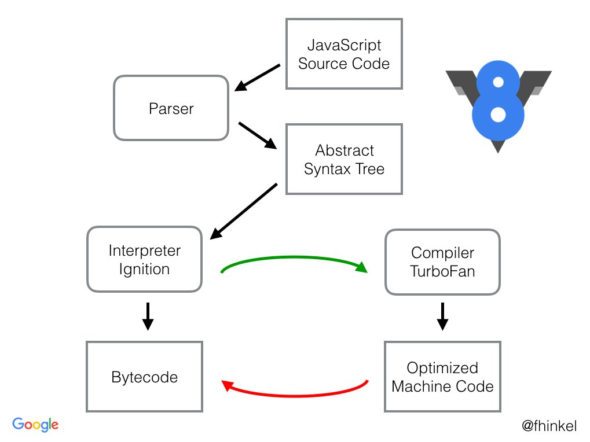
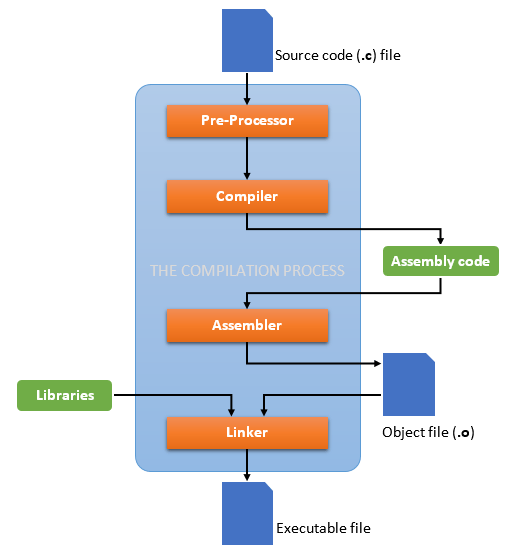

Web Assembly é uma linguagem Low Level voltada para o ecossistema Web. Web Assembly difere de JS em basicamente todos os aspectos e pode mudar completamente o ecossistema web e a maneira que entendendo performance e escalabilidade no front e no backend.
Existe muita info truncada e mal entendimento de WASM por aí. Algumas das premissas que ficarão implícitas na thread:
Para entender WASM precisamos antes entender algumas coisas
JS é uma linguagem Top Level, human-readable e Interpretada. Isso significa que vc escreve JS de maneira humana e amigável e o MESMO código que vc escreve será lido pela máquina que o interpretará, converterá em outros formatos, otimizará e o executará. Quem faz isso é a Runtime.
Por conta disso, JS sofreu muito com falta de padronização: browsers implementavam diferentes engines pra js, ou seja: diferentes maneiras de interpretar um mesmo código. Com o tempo isso foi melhorando, veio V8, Babel, WebPack e melhorias na governança da linguagem (TC39).
Essa natureza aberta do JS casa bem com a natureza web: é fácil de implementar, leve de reproduzir no browser, vc pode até mesmo mudar um código on the fly e rodar (interpretar) novamente sem reload de página. Porém isso tudo é feito para rodar pequenos e médios chunks de código
Porém conforme a web avança com apps cada vez mais complexos, necessidade de performance, smart optimization e times cada vez maiores, essa natureza do JS começa a ser um problema para alguns produtos e é custoso ter que "corrigir" e manter padrão e/ou otimização pura na unha
Aqui estão os passos executados quando um código JS é interpretado. Isso tem custo de processamento, e por vezes leva a diferentes comportamentos a depender do ambiente:
Viu que existe um ciclo que se forma ali? Aqui vive o seu código rs, basicamente a runtime de fato interpretando as coisas. Esses passos são repetidos em todas as maquinas. Se vc quiser saber sobre esse assunto a fundo, aqui está um ótimo link pra isso
Logo não é possível garantir a integridade de um código JS dadas as diferenças de runtime e o problema de backward compatibility (dont break the web). A natureza interpretada, single threaded e weak typed em JS leva a incertezas e uma performance meh... Algns aspectos dessa natureza do JS foram explanados no post O que Brendan Eich disse sobre a hipotese imaginária de substituir o JS por outra linguagem no Front, uma Aula gratuita via Twitter
Essa natureza do JS é irrelevante pra algumas aplicações, mas quando começamos a falar de uma web mais complexa, isso começa a ser um verdadeiro empecilho. No backend a coisa é ainda mais complicada: como o ecossistema pode alterar o output (interpretação) em langs interpretadas o backend faz um custoso snapshot de todo o ecossistema que vai rodar o código. Tem diveeeeersos outros motivos pra fazer isso, mas integridade de interpretação é com certeza um deles. É aí que entra o Docker e os containers: integridade e padronização.
Agora vamos pensar em uma linguagem Low Level e compilada: C
Vc escreve seu código e o compila, isso significa que o código que vc escreveu não é o mesmo código que será executado. Ele passará antes por verificações, otimizações e transformações que gerarão um intermediário
Seu código será transformado num código assembly (código de montagem) que é bem low level e um tanto inóspito para seres humanos normais rs. O assembly code é altamente padronizado e dele derivará o Object Code -> Byte Code que é de fato interpretado pela máquina:
Para garantir a alta padronização do processo de compiling, vc tem alguns extras
Após compilado um código é um pacote pronto para ser executado. Diferente das linguagens interpretadas, todo processo de otimização e checagem acontece uma vez e o resultado é empacotado, não há repetição, apenas execução direta, ou seja: performance e confiabilidade.
Isso trás um ecossistema extremamente confiável: o código é extremamente robusto, padronizado e a saída extremamente controlada e parametrizada. Isso garante muita confiabilidade, x código gerou x executável que vai rodar em x ambiente sempre, não tem firula, não tem crise.
Aí vc deve estar pensando: então porque não compilamos coisas pra web invés de usar JS? R: Porque é impossível. Lembra que compilar necessita um target? (quem vai rodar o código?). Um app web roda numa infinidade de devices (pc, celular, relogio, geladeira, etc)
Vc teria que compilar uma versão do seu código para cada target (device) que diferisse em arquitetura de processamento. É simplesmente inviável. Mas se vc pensou assim, vc bateu na trave. Lembra do código Assembly?
O Assembly é um meio termo: não é nem top level, e não tá 100% compilado ainda. Volta na imagem do C lá e veja que ele está no middle-step de compilação. Ele também é altamente confiável e padronizavel. Daí vc pensa: Ótimo, vamos faze o browser entender assembly!
Tá esquentando! O problema é que o assembly geralmente é especifico (geralmente para desktop environments) e roda o compilado diretamente num server ou client, não dá pra rodar isso dentro do browser.
Mesmo se vc fizesse umas gambiarras, a maneira de um Assembly Code ser montado não seria reconhecida pelo browser. Mesmo se vc injetasse um assembler no browser, a maneira dele acessar a memória e o garbage collecting introduziriam violação de acesso (acesso a memoria indevida)
É AÍ QUE ENTRA O WASM!!!
O WASM é um assembly code criado para rodar dentro de um browser (mais especificamente dentro de um host wasm que pode até estar no backend, mas isso é outro assunto). É uma espécie de código intermediário low level pré-compilado pronto pra ser executado
Ou seja, no middle-step de compilação, ao invés de montar o código para Assembly comum, vc diz ao compilador para montar um código WASM (daí o nome: Web ASSEMBLY). Vc está dizendo: "hey, isso nao vai rodar num desk comum, vai rodar na web (wasm-host), otimiza e deixa pronto aí".
O correto seria dizer que seu código compilado para WASM vai rodar num Wasm-Host, ou: uma pequena runtime feita para executar WASM, e essa runtime é distribuída junto com os browsers, os benefícios são tanto que já se fala em distribuir essa runtime no backend
Isso impactaria o conceito de serverless e conteinerização como mostrado no video abaixo.
O wasm-host (runtime) tbm resolve problema dos targets pq o seu target de compilação é sempre o Wasm-Host (vc compila pra rodar dentro de um host wasm), novamente daí o nome: WEB-Assembly rs. O Wasm-Host está embutido no browser e vai rodar igual em todo device :D
Quais os benefícios?
Logo a web tambem ficará mais rica, será possível dispender mais processamento e mais otimização para games, processamento gráfico em geral, VPNs etc. Abaixo alguns produtos que vc provavelmente utiliza que rodam em Wasm
Isso nao significa que Wasm substituirá JS em apps comuns. Wasm não tem acesso direto ao DOM, logo vc precisa de workers intermediários pra fazer a comunicação entre o Front e o Wasm rodando em background, logo JS e WASM são COMPLEMENTARES e não concorrentes.
Vc pode inclusive portar codigo antigo de outras linguagens pra rodar dentro do browser. Por exemplo, veja esse port do ffmpeg pra rodar client side no browser via WASM.
Tudo isso está nascendo agora, vem sendo amplamento discutido e é tudo muito experimental, mas já dá pra brincar bastante. Por incrivel que pareça isso foi uma breve introdução, o assunto é denso e minuscioso. Vamos ver o que o futuro nos reserva...
Caso vc esteja se perguntando sobre a padronização e distribuição de uma runtime standard para o Wasm, vc pode ler sobre o WASI, que é justamente isso. O Wasi está sendo criado e documentado com o apoio de big techs e da comunidade, aqui está a DOC do WASI
Obs: Wasm é BEM DIFERENTE de uma JVM. A JVM interpreta "Java Bytecode" que é transformado em assembly de acordo com o env e depois em Machine Code
Wasm não tem nada disso, ele É assembly per si. É mais low level, simples e performático.
JVM: Java Byte Code (.class) -> Checking -> Assembly -> Machine Code
Wasm: Wasm Code (assembly) -> Machine Code
Todos os outros steps rodam em "compiling time" no Wasm.
Você pode saber mais sobre isso Aqui